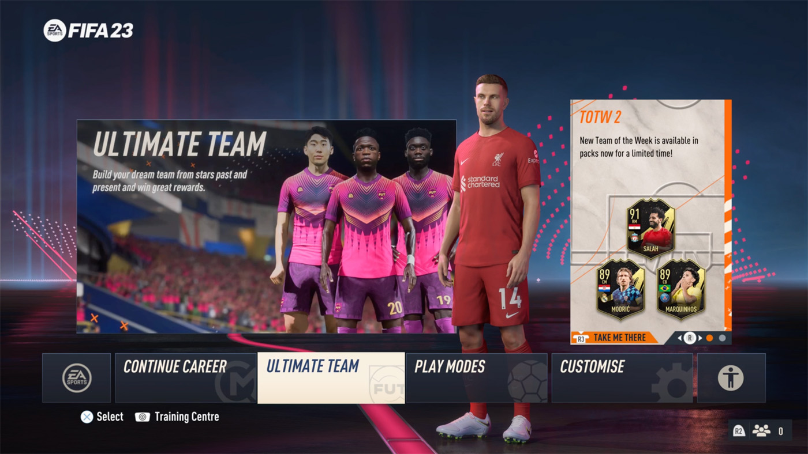
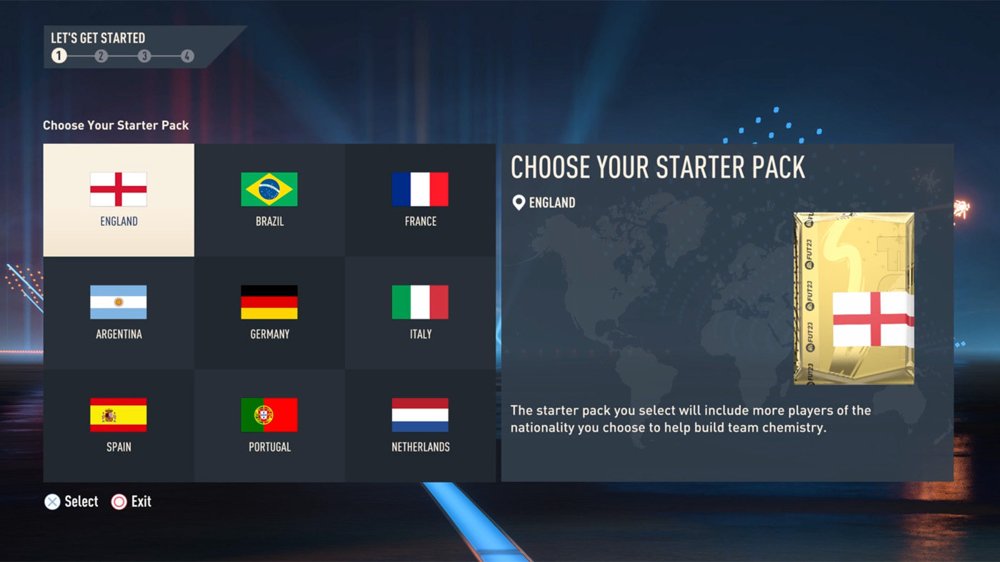
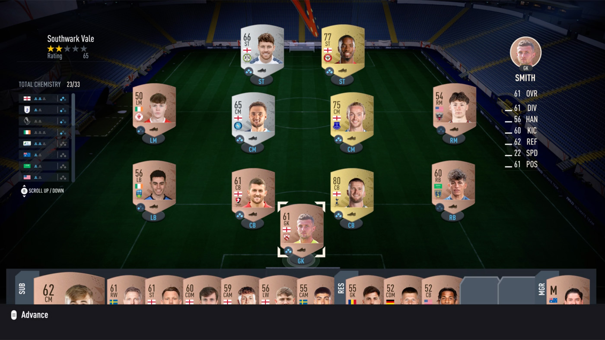
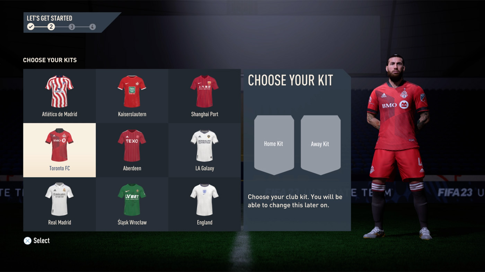
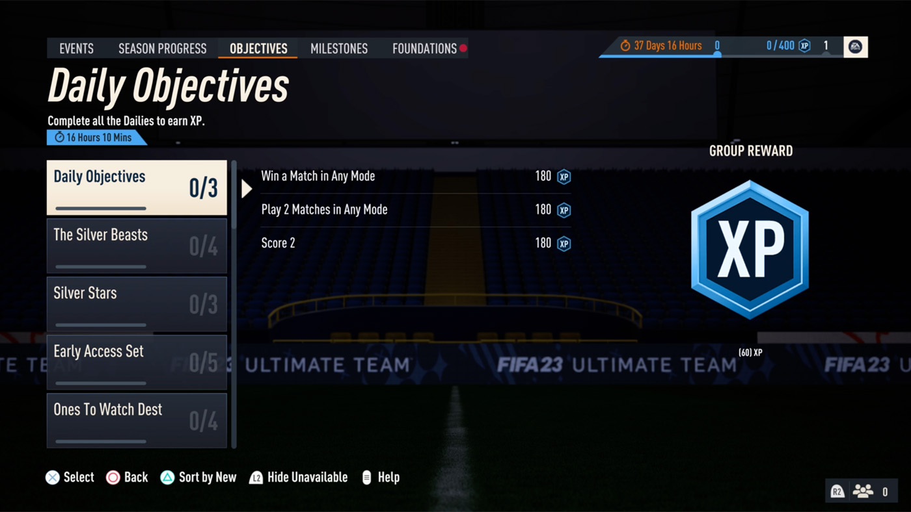
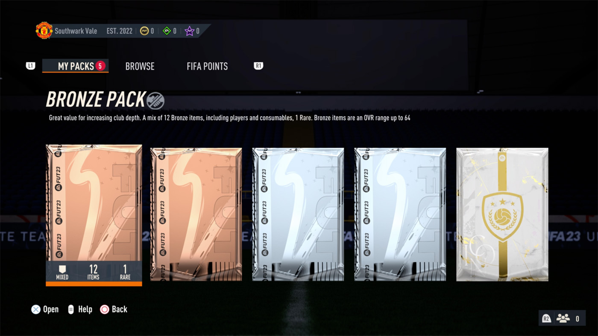
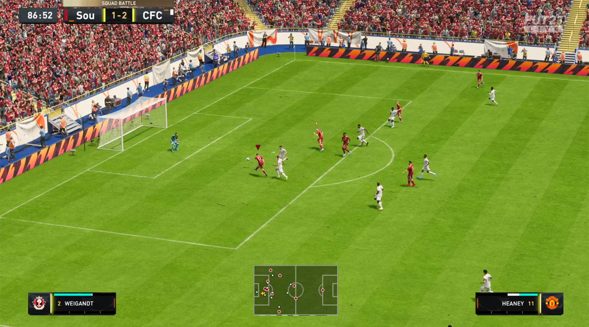

Fire up your FIFA 23
FIFA Ultimate Team is an in-game mode in the FIFA 23 game. So, to play FUT, you need to know how to start and run your FIFA 23 first. If you are a beginner, you can follow the FIFA 23 starting guide to learn how to get the game started.
What is FIFA 23 Ultimate Team?
The FIFA Ultimate Team (also known as FUT) is a game mode in FIFA that allows you to create and manage your own club to play online and offline games and earn rewards using any FIFA 23 players and managers, as well as a collection of various types of cards such as club items, staff, and consumables. By playing matches and games in the Ultimate Team mode, you’ll be able to get better players and items so you can improve your club’s strength and budget.
FUT Players, Items and How to Get Them
All players, managers, staff, club items and consumables are available as card items in FUT. These card items can be gained as rewards by playing FUT games, can be received by opening FUT packs and can be bought and traded in the FUT online market which is called the Transfer Market. To buy packs you need to spend FIFA coins or FIFA Points. To buy players or any other cards from the Transfer Market, you need to spend Coins.
Coins can be gained as rewards for playing FUT matches and challenges. You can also earn coins by selling your cards to the other users in the Market. Points can be only bought from the FUT Store.
What is Chemistry?
In FUT, the chemistry is a factor that defines the compatibility of a player in his position with his squad’s formation, the relation with his teammates in other positions and the team manager.
The higher player and team chemistry rates your squad can score, the better compatibility and relationship you will have amongst your players and manager. The player’s chemistry rates in FUT are shown as 3 diamond-shaped icons underneath their cards, where the more diamonds are in blue, the better chemistry the player gets.
Getting Prepared and Started
Before jumping into FIFA 23 Ultimate Team, you may want to learn about how to start FIFA 23 game. Next, we suggest you to get prepared for FIFA 23 and FUT 23, especially when you are shifting from FUT 22 to FUT 23, so you can carryover your FUT data and progress to FIFA 22.
Follow the In-game Instructions
Now, you can carry on and launch the FUT from the PLAY tab in FIFA 23 main menu. When you launch the FUT for the first time, the system instructs you on how to play and run your Club in FUT. Just follow the step to create your club and learn how to play it properly:
Select a Country
The first thing you will need to do in FUT is to choose a country for your starter pack from a country list given. The country you select will put more players from that nationality on your starting squad and will set your player’s nationality and league preference in the future.
Your First Squad
After choosing a country, the system will give you 22 players plus a loan player who are mostly coming from the country you chose before – A loan player comes with a limited number of matches (usually 5-game contract), when they reaches the limitation they won’t be able to play for your club.
Your Club Identity
Now, you are required to choose your club’s home and away kits from the choices you get. Then you need to choose your club crest from the given collection. Don’t worry, later you can change your club kit and badge with the ones you got from the game.
Select to Learn & Upgrade or to Play Now
Next, you have the option to either learn and upgrade or start playing a match. We recommend you keep learning and upgrading so that your knowledge of FUT gets upgraded while your club gets stronger as well.
Complete the Objectives
Here, you will be introduced to the objectives, and you can complete a basic one if you follow the instruction guide. Choose any objective and complete it. Objectives are usually available as a group with breakdowns, where you get rewarded for completing each task as well as the group. Try to complete as much as you can so you can get more prizes.
Claim Rewards and Open Packs
By completing objectives, you’ll notice that you get rewards, and these rewards will go to your club. Pack rewards are stored in the FUT Store. Go to the store (FUT Home > Store) and navigate to My Packs. There you can see your gained unclaimed packs.
Do open your packs and claim the items. Upgrade your squad with the players you gained so you can form a stronger team.
Play a Match
Play a match if you haven’t yet. This will help you complete some objectives whilst also allowing you to experience the gameplay. Check out the objectives first, go through them and see if there are any objectives for playing matches – For example, some may require you to do a power shot in the game to complete an objective and gain some rewards.
We recommend you play a single-player match in the Squad Battles. Squad Battles matches are offline and there are weekly rewards for playing this match mode. Plus, every game you play in the Ultimate Team will give you some coin rewards, which can be used to buy players and items from the FUT market.
Keep Playing & Exploring
The more matches and challenges you play, the more rewards you gain. This means your club will get more rich by getting more coins and card items. There are many ways to earn rewards and coins in FUT 22, one of the ways to get good player card is to play SBC (Squad Building Challenges) mode.
Playing online and offline matches will also cause you to earn Match Coins, plus packs as rewards. It also teaches you how to improve your gameplay and work on your players’ chemistry etc.
Try to open FUT packs more often and during the promotional events so you get more chance to get special player cards.
Do trade items in the Transfer Market, trading cards there could help you increase your club’s budget and more earn coins. Don’t forget that you can manage your your FUT club using the FIFA 23 web app and the companion app so you can access to FUT 23 using your mobile devices from anywhere.
So, keep playing games, matches, and training in the Ultimate Team to improve your gameplay skills and explore new things. Try the new FUT Moments mode, which is a new single-player game mode in FUT. FUT Moments contain mini-games with which you can improve your FIFA skills and work on getting the most out of a scenario with a limited time
If you have a friend who is a FIFA gamer, the FUT 23 Friendlies mode would also be a good idea to play with them in order to improve your skills, especially when playing online multiplayer games.